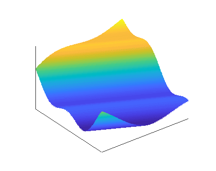
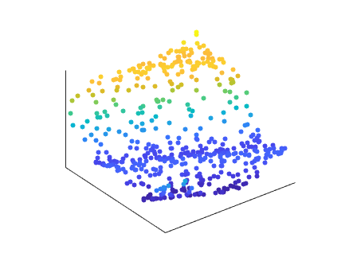

To deal with a 14-dimensional space, visualize a 3D space and say "fourteen" to yourself very loudly. Everyone does it.
-Geoffrey Hinton
High-dimensional spaces appear frequently in problems related to computational or data science. Unfortunately, we are three-dimensional beings trapped in a three-dimensional physical world. This makes it difficult for the average person to understand these complex spaces. Mathematics provides us with the tools to work in high-dimensions but leaves us lost without any intuition into the behavior of these spaces. This page attempts impart that intuition by explaining and visualizing high-dimensional spaces with interactive tools.
The Curse of Dimensionality and Dimension Reduction
For this project, we consider high-dimensional spaces and dimension reduction in the context of computer experiments [5, 7]. Mathematically, we represent the underlying model of computer experiments as a deterministic map from a vector of \(m\) inputs to a scalar-valued output,
$$y\;=\; f(\mathbf{x}) , \qquad y \in \mathbb{R} , \quad \mathbf{x} \in \mathbb{R}^m . \tag{1}$$
In general, the study of these functions gets more difficult as the dimension of the input space \(m\) increases. We illustrate this point using an example of the nonintuitive behavior of high-dimensional spaces.
Example : The \(k\) nearest neighbor algorithm
The \(k\) nearest neighbor (knn) algorithm is a popular tool in a variety of machine learning methods. This algorithm finds the \(k\) closest points to some a given point in space and is often used to approximate conditional moments or for clustering data. However, there are issues with using the knn algorithm in high dimensions [1]. For a given point \(\mathbf{x}\) and a random sample of \(M\) points \(\{\mathbf{x}_i\}_{i=1}^M\), consider the ratio of the distance to its furthest neighbor over the distant to its nearest neighbor,
$$\mathcal{R} (\mathbf{x}) \;=\; \frac{\max_{i} \left| \left| \mathbf{x} - \mathbf{x}_i \right| \right|}{\min_{i} \left| \left| \mathbf{x} - \mathbf{x}_i \right| \right|} \, .$$
When \(\mathcal{R}\) is large, the nearby points are much more meaningful for approximation or clustering than far away points. However, when \(\mathcal{R}\) is small (note that it has a lower bound of 1), then the results from the knn algorithm become less meaningful. The following plots show the behavior of this ratio for increasing dimension with two different sampling schemes. The plot on the left shows \(\mathcal{R}\) decaying rapidly with dimension when \(M\) is held constant. In the plot on the right, we allow the number of samples to grow exponentially with dimension. In this case, we maintain a relatively constant value of \(\mathcal{R}\). This hints at the exponential growth of distances in high dimensions.
The knn example above shows how increases in dimension can require exponential increases in computational cost to maintain the same level of performance. Formally, this exponential increase in cost associated with increasing dimension is referred to as the curse of dimensionality [4, 9]. This curse can make a variety of numerical studies (e.g., optimization, uncertainty quantification, approximation) infeasible in high dimensions. One approach to combat this issue is to reduce the number of inputs \(m\) to your function. We can do this by finding \(\mathbf{A}\) with \(n < m\) such that
$$y \;=\; f(\mathbf{x}) \;\approx\; g(\mathbf{A}^\top \mathbf{x}) \tag{2}$$
for some \(g\). When the approximation above is exact, \(f(\mathbf{x})\) is known as a ridge function [6]. If we consider the columns of \(\mathbf{A}\) to be directions within the \(m\)-dimensional input space, then \(f\) is constant along directions orthogonal to the columns of \(\mathbf{A}\). The animation below shows a two-dimensional ridge function. When the proper rotation is applied (i.e., the matrix \(\mathbf{A}\) in (2)), it appears to be simply a one-dimensional function. In this way, we can use ridge functions to aid in dimension reduction.

In practice, we don't have a nice smooth surface to look at like the one above. Instead, we has a set of point evaluations of our function \(f\). A shadow plot is a scatter plot of these point evaluations projected along various directions in our input space [3]. When those directions correspond to columns of \(\mathbf{A}\) from (2), then we can visualize low-dimensional ridge structure in \(f\). The figure below is a shadow plot of the same function as the animation above.

Zonotopes
Before we introduce zonotopes, we must explain the idea of an \(m\)-dimensional hypercube. A hypercube is the extension of a standard three-dimensional cube to arbitrary dimensions. Recall from [1], that our inputs \(\mathbf{x}\) have dimension \(m\). If we assume that each input \(x_i\) is defined over the interval \([-1,1]\), then the vector \(\mathbf{x}\) lives in the \(m\)-dimensional \([-1,1]\) hypercube — denoted \([-1,1]^m\). A zonotope is the linear projection of an \(m\)-dimensional hypercube onto an \(n\)-dimensional space with \(n < m\). We express it mathematically as
$$Z(\mathbf{A}) \;=\; \left\{ \left. \, \mathbf{A}^\top \mathbf{x} \, \right| \, \mathbf{x} \in [-1,1]^m \, \right\} . \tag{3}$$
In the context of dimension reduction, zonotopes define the space of reduced inputs. Understanding this domain is critical to studying the reduced function.
Interactive zonotope tool
Below is an interactive tool for exploring high-dimensional spaces by examing the two-dimensional zonotope of an \(m\)-dimensional hypercube. The first plot contains the zonotope projected along the orthogonal directions \(\mathbf{a}_1\) and \(\mathbf{a}_2\). The circles denote the corners of the hypercube. Notice that some of the corners define the boundary of the zonotope while others are in the interior. By using the dropdown menu, we can change the dimension \(m\) of the hypercube. Notice the the number of corners of the hypercube grows exponentially with dimension. By pressing the "Refresh" button we obtain a new random zonotope defined by \(\mathbf{a}_1\) and \(\mathbf{a}_2\)
The next two plots show the values of the entries of \(\mathbf{a}_1\) and \(\mathbf{a}_2\), respectively. By clicking and drag the circle in these plots, we define new projections and obtain new a zonotope. Note that we enforce orthonormality of the vectors \(\mathbf{a}_1\) and \(\mathbf{a}_2\) to ensure the zonotope is simply a rotation of the hypercube and does not experience any scaling.
Select dimension:
Display interior zonotope points
Active Subspaces
One method for discovering the matrix \(\mathbf{A}\) that defines our ridge structure is active subspaces [2]. Consider the matrix
$$\mathbf{C} \;=\; \int \nabla f (\mathbf{x}) \, \nabla f(\mathbf{x})^\top p(\mathbf{x}) \, d \mathbf{x} \tag{4}$$
where \(\nabla f(\mathbf{x}) \in \mathbb{R}^m\) is the gradient of \(f\) with respect to the inputs \(\mathbf{x}\) and \(p(\mathbf{x})\) is the input density function (typically assumed uniform over the hypercube). If \((\lambda_i, \mathbf{w}_i)\) denote an eigenpair of \(\mathbf{C}\), then
$$\lambda_i \;=\; \int \left( \mathbf{w}_i^\top \nabla f (\mathbf{x}) \right)^2 p(\mathbf{x}) \, d \mathbf{x} . \tag{5}$$
The right-hand side of (5) is mean squared directional derivative of \(f\) in the direction of \(\mathbf{w}_i\). Thus, if \(\lambda_i\) is large, then \(f\) changes a lot in the direction of \(\mathbf{w}_i\), on average. If \(\lambda_i\) is small (or zero), then \(f\) changes very little (or not at all) in the direction of \(\mathbf{w}_i\), on average. In this way, active subspaces can provide insight into ridge structure in high-dimensional functions.
Interactive active subspaces tool
Below is an interactive tool for exploring dimension reduction and ridge functions uncovered using active subspaces. For this visualization we used a piston simulation model that is a standard test problem in uncertainty quantification [8]. The function models the cycle time of a piston within a cylinder based on seven physical inputs. The function has the form
$$y \;=\; 2 \, \pi \, \sqrt{\frac{M}{k + S^2 \, \frac{P_0 \, V_0}{T_0} \, \frac{T_a}{V^2}}} \, , \tag{6}$$
where
$$V \;=\; \frac{S}{2 \, k} \left( \sqrt{A^2 + 4 \, k \, \frac{P_0 \, V_0}{T_0} \, T_a} - A \right) \quad \text{and} \quad A \;=\; P_0 \, S + 19.62 \, M - \frac{k \, V_0}{S} . \tag{7}$$
The seven physical inputs are given in the table below. We assume the inputs are uniformly distributed in the designated ranges. For the active subspace analysis, we apply linear transformations to center and scale each input to be on a \([-1, 1]\) interval. Thus, our input space is the seven-dimensional \([-1, 1]\) hypercube.
$$\begin{array}{ccc} \hline
\text{Symbol} & \text{Range} & \text{Description} \\ \hline
M & [ 30, 60] & \text{piston weight } (kg) \\
S & [ 0.005, 0.020] & \text{piston surface area } (m^2) \\
V_0 & [ 0.002, 0.010] & \text{initial gas volume } (m^3) \\
k & [ 1000, 5000] & \text{spring coefficient } (N/m) \\
P_0 & [90\,000, 110\,000] & \text{atmospheric pressure } (N/m^2) \\
T_a & [ 290, 296] & \text{ambient temperature } (K) \\
T_0 & [ 340, 360] & \text{filling gas temperature } (K) \\ \hline
\end{array}$$
The first two plots are one- and two-dimensional shadow plots of (6). By pressing the "Reset" button, we set the vectors \(\mathbf{a}_1\) and \(\mathbf{a}_2\) to be the dominant eigenvectors of the matrix (4). We see relatively strong one- and two-dimensional ridge structure in these plots. Any variance from the trend is accounted for by changes in the inactive directions (i.e., those directions orthogonal to \(\mathbf{a}_1\) and \(\mathbf{a}_2\)).
The next two plots contain the entries of the vectors \(\mathbf{a}_1\) and \(\mathbf{a}_2\) that define the shadow plots. Again, we can drag the circle on these plots to change the vectors and the corresponding shadow plots. In this way, we can visualize how various rotations and projections of our high-dimensional space can uncover different structures in \(f\).
Reset active subspace:
References
[1] K. Beyer, J. Goldstein, R. Ramakrishnan, and U. Shaft. When is "nearest neighbor" meaningful? In International Conference on Database Theory, 1999.
[2] P. G. Constantine. Active Subspaces: Emerging Ideas for Dimension Reduction in Parameter Studies. SIAM, Philadelphia, 2015.
[3] R. D. Cook. Regression Graphics: Ideas for Studying Regressions Through Graphics. Wiley & Sons, New York, 1998.
[4] D. L. Donoho. High-dimensional data analysis: The curses and blessings of dimensionality. In AMS Conference on Math Challenges of the 21st Century, 2000.
[5] J. R. Koehler and A. B. Owen. Computer experiments. Handbook of Statistics, 13(9):261–308, 1996.
[6] A. Pinkus. Ridge Functions. Cambridge University Press, Cambridge, 2015.
[7] J. Sacks, W. J. Welch, T. J. Mitchell, and H. P. Wynn. Design and analysis of computer experiments. Statistical Science, 4(4):409–423, 1989.
[8] S. Surjanovic and D. Bingham. Virtual library of simulation experiments: Test functions and dataset, 2015.
[9] J. F. Traub and A. G. Werschulz. Complexity and Information. Cambridge University Press, Cambridge, 1998.